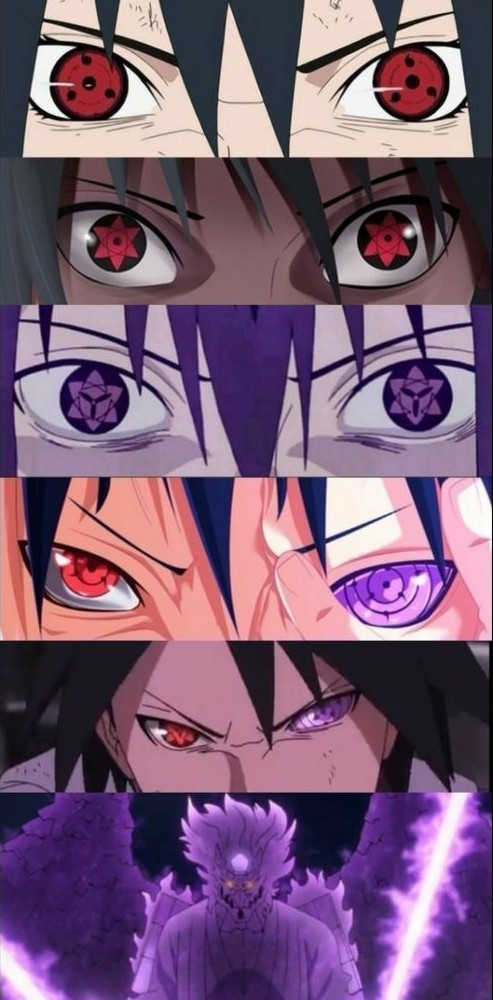
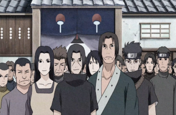
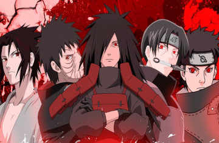

Sasuke Uchiha (うちはサスケ, Uchiha Sasuke) é um dos últimos membros sobreviventes do clã Uchiha de Konohagakure, além de ser a reencarnação atual de Indra. Ele se tornou um shinobi para que pudesse algum dia ficar forte o suficiente para se vingar contra o seu irmão mais velho, Itachi, que tinha massacrado todo o seu clã.

(Evolução de Sasuke Uchira, e o seu olho sharingan. by:Pinterest)
Quando criança, Sasuke era muito gentil e amável com sua família e respeitoso com seu clã e professores. Ele tinha muito orgulho de ser filho de Fugaku e irmão de Itachi, tendo um forte desejo de imitá-los, desejando ter a aprovação e reconhecimento de seu pai.Isto mudou após o massacre do clã Uchiha, que acabou transformando Sasuke em um jovem frio, cínico e arrogante, tornando-se um vingador auto-intitulado dedicado a matar Itachi e restaurar o clã Uchiha.
Aparência de Sasuke Uchiha
Preencha o Formulário , e veja o resultado!
Se unindo ao Time "Kakashi"
Durante seu tempo na Academia, Sasuke era um solitário, gastando mais tempo sozinho aperfeiçoando suas habilidades do que se socializando com os outros alunos, ignorando as várias garotas que eram atraídas por ele em favor da solidão. Quando introduzido pela primeira vez para o Time Kakashi, Sasuke mostrou grande indiferença para com os outros, sentindo que suas habilidades eram superiores com relação aos seus companheiros de equipe, vendo-os como nada mais do que um obstáculo para ele e seu próprio avanço. Apesar disso, tendo trabalhado com o Time Kakashi, Sasuke passou a se importar mais com a sua equipe e começou a vê-los como uma espécie de família, ficando disposto a arriscar sua vida para salvar as pessoas próximas a ele em várias ocasiões.
(Time Kakashi:Resumido em um clip incrível.)
Clã Uchiha
O Clã Uchiha (うちは一族, Uchiha Ichizoku) foi um dos quatro clãs nobres de Konohagakure, e também tinha fama de ser o clã mais poderoso da vila, produzindo shinobi que foram excepcionalmente talentosos e orientados para batalha. Juntamente com o clã Senju, eles fundaram Konohagakure, mas agora está quase extinto após os eventos do massacre do clã.


O clã Uchiha era mais temidos pelo seu poderoso Sharingan, um Kekkei Genkai que lhes dá a capacidade de ver as "cores" do chakra, permitindo-lhes analisar e copiar as habilidades de seus oponentes, juntamente com uma série de outras habilidades. Apenas um seleto número membros do clã Uchiha manifestou o Sharingan. Devido à sua afinidade natural para a batalha e sua proficiência com o genjutsu ocular, muitos ninjas consideravam mais taticamente favorável fugir em vez de enfrentar um shinobi Uchiha em um combate um-a-um. Entre as técnicas concedidas pelo Sharingan, o Izanagi e o Izanami são considerados proibidos, devido ao seu efeito de tornar o usuário cego em troca para a criação de um genjutsu capaz de escapar da morte ou prender o adversário sem falhas. Apesar de o clã ser temido por seu Sharingan, os olhos também foram transplantados em vários personagens de fora do clã.